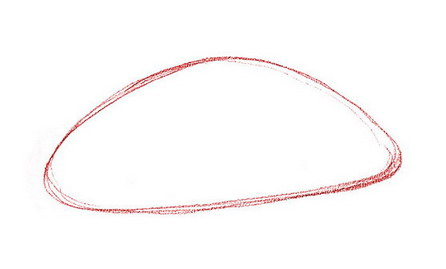
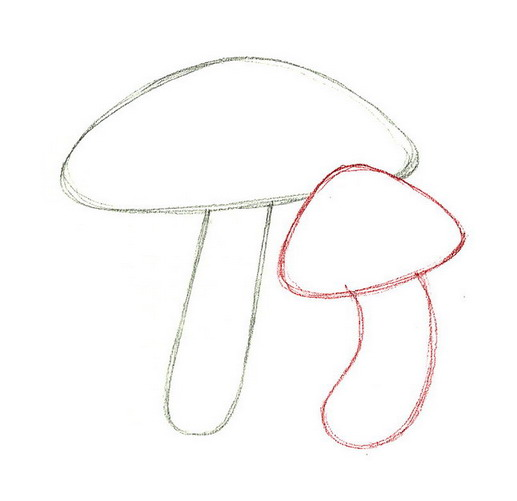
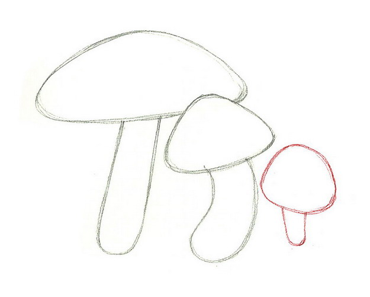
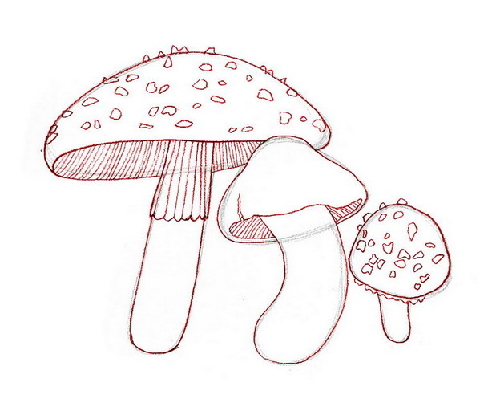
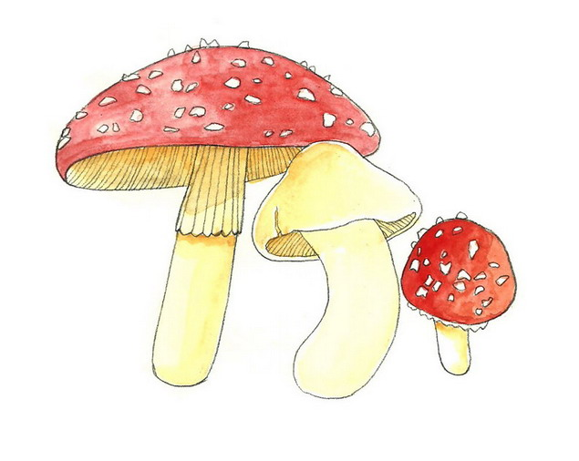

Wild mushrooms are a fascinating type of fungi, and if prepared the right way, some can even be eaten in soup or on pizza. If you feel like doodling something simple and cute, then follow this tutorial to learn how to draw a group of mushrooms.
Steps
Draw an arcing, shell-like shape. This will be the cap of the primary mushroom.

Under the initial shape draw a long, vertical oval.Try to make the lower part tilt slightly to the left. This will serve as the first mushroom's stem.
Use the steps above to draw another mushroom next to the first. Change the shape of this second mushroom. Make it smaller, with a pointy cap and a thicker, more crooked stem.

Sketch a third mushroom following the same steps. Make this one tinier, with a rounder cap and thinner stem than the other two.

Outline all three mushrooms over the sketches and add details. Put vertical lines on the undersides to give your mushrooms texture, and sketch creases on the stems and small shapes all over the first and third mushrooms.

Add in color! Color the caps of the first and third mushrooms red, and the second in yellow/light beige. You can also make the stems all the same color (as seen here) so they appear to be part of a family, but that's your decision.

Video
Tips
Draw lightly in pencil so that you can easily rub out mistakes.
Remember, the suggestions for the colors, details, and even sizes of your mushrooms are just ideas--it's your drawing, so as long as you follow the basic shape guidelines, you can make your mushrooms look however you want!